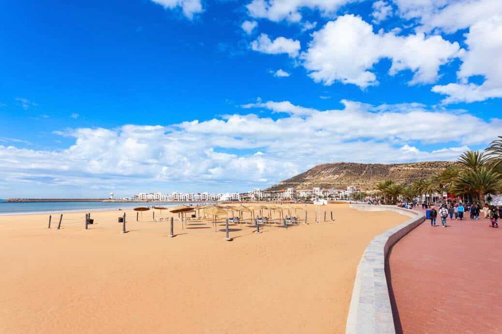
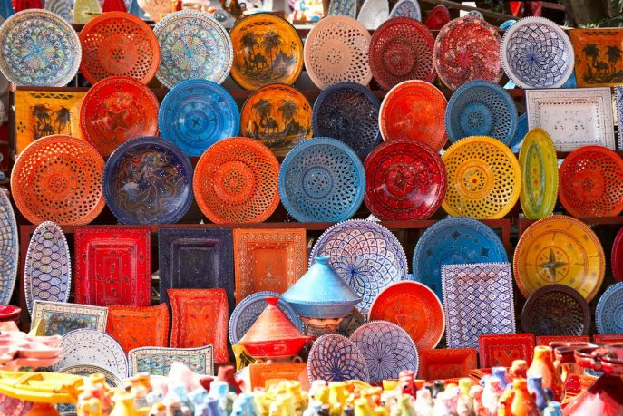
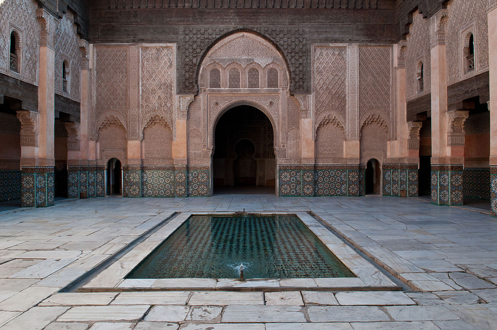
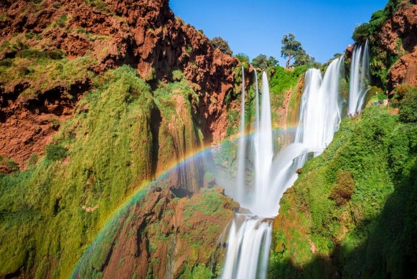
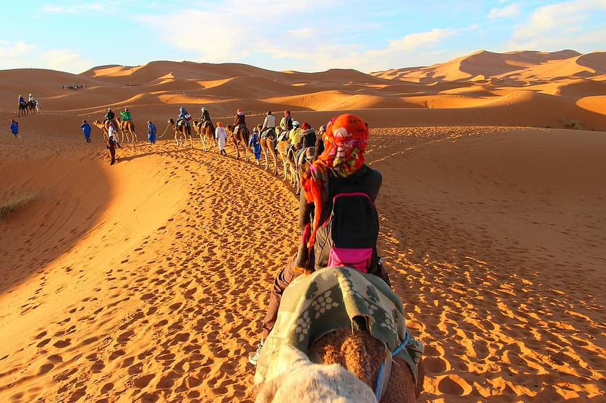
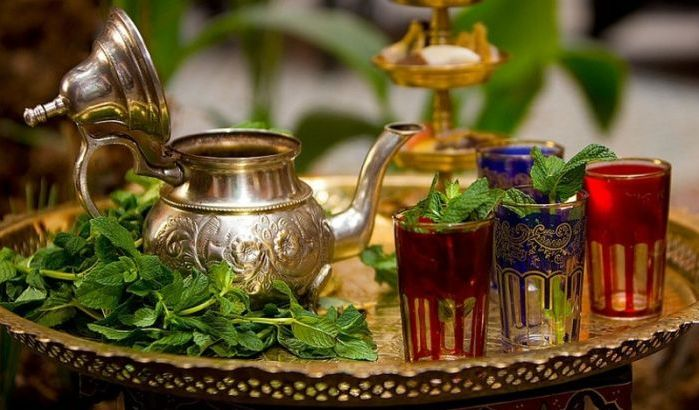

Un pays de diversités et de rapprochement entre les peuples qui dispose
d’un potentiel touristique énorme

Un climat clément tout au long de l’année :
Tout en ayant des variétés régionales pouvant être importantes, le
Maroc bénéficie d’un climat de type méditerranéen où l’hiver est en
général doux et l’été chaud. En hiver, les températures restent
clémentes à Marrakech ou Agadir et le temps ensoleillé
particulièrement dans le sud, permettant d’atténuer les effets de la
saisonnalité sur l’activité touristique. En été, les chaînes de
l’Atlas ou les côtes Atlantiques permettent d’échapper aux fortes
chaleurs.

Une culture locale diverse et variée :
L’emplacement géographique fait du Maroc un pays multiculturel, vu
la diversité de sa population berbère, arabe, africaine, andalouse
et Européenne. Cette mosaïque d'ethnies confère au Maroc une grande
richesse culturelle, qui se reflète notamment sur l’artisanat,
particulièrement riche et varié, les traditions culinéaires avec une
cuisine renommée à l’échelle internationale, l’art de vivre « à la
Marocaine » qui se refléte sur des éléments aussi divers que
l’architecture d’intérieure typique des salons marocains le bain
Maure appelé également « Hammam ».

Des monuments historiques exceptionnels :
Le Maroc, anciennement Empire Chérifien, c’est plus de 1 200 ans
d’Histoire et plus de 5 dynasties qui ont présidé aux destinées du
pays et ont laissé chacune leur emprunte sur l’architecture et les
monuments du pays. Entre les Medinas, véritables musées à ciel
ouvert, les nombreuses Kasbahs majestueuses aux confins du déserts,
les Ryads des villes de Marrakech ou de Fes ou les mosquées et
autres édifices plusieurs fois centenaires, les monuments valent le
détour.

Des paysages naturels magnifiques :
Entre les côtes Atlantiques ou les criques Méditerranéennes, les
montagnes du Haut Atlas ou celles du Rif, Les forêts de cèdre du
Moyen-Atlas ou les palmeraies du Tafilelt, les plaines du Souss ou
les splendides étendues dunaires du Grand Sud, le Maroc offre une
palette de paysages à couper le souffle et d’une rare diversité à
l’échelle internatonale.

Une identité et une marque bien établies :
Avec de fortes particularités culturelles, le Maroc peut se targuer
de disposer d’une identité bien établie à l’échelle internationale.
Des villes comme Casablanca, Marrakech ou Tanger ont une notoriété
dépassant de loin les frontières du pays . Le Couscous, le Tagine,
les balades en dromadaires etc… sont autant de particularités
propres au Maroc qui ont contribué à faire du pays la première
destination touristique d’Afrique depuis plusieurs années.

Une tradition de l’accueil ancrée dans la population :
Naturellement acueillants et chaleureux, les Marocains ont une
longue tradition de l’hospitalité. Qui, après avoir visité le Maroc,
ne s’est pas vu offrir un vert de thé à la menthe ?